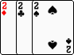
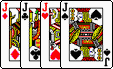
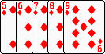

Full is a pair and a triplet. The triplet
is compared first followed by the pair. Therefore a 333-22 is smaller than AAA-44.
Full is a pair and a triplet. The triplet
is compared first followed by the pair. Therefore a 333-22 is smaller than AAA-44.The game is played by four players. (A variation of this game called Magic Big 2 can be played by three players).
The deck is shuffled and each player is dealt 13 cards. Each player take turn to play the cards on the table according to the game rule. If a hand cannot be play, the player will have to pass. If three consecutive passes are made, the first player can start a new set.
The first player to finish all the cards is the winner and the remaining cards held by the other players are counted. For gamblers, usually the winner is paid according the cards left. For social entertainments, the counts are just tallied.
The player who has the three of diamond will play first. The three diamond can be played as a single card or in combination with others forming a pair, three, four or five card sets.
is the smallest card and is the highest card.
The suites are rank in the order of Diamond, Club, Heart and Spade. So a typical hand may be sorted like this from left to right:
Single card/P>
Each player place a card onto the table that is ranked higher that the last one played. If the two of spade is played, the player can immediate start a new set as it is the largest card.
Pair
A pair is two card of the same kind. If the next player has also the same kind, they can be played if one of the suite is ranked higher. For the example on the left, if the next player has a pair of consisted of 7 club and 7 diamond, that pair can be played.
Three of a kind
Also called triplet. Played similar to pairs.
Four of a kind
Four of a kind can be played but it is very rare if anyone would want to play it since it is better off to add an extra card to make it five so as to empty the hand faster.
When it comes to the five card sets, the poker sequence will apply. The only twists is that the Royal flush is ranked lower that the Straight flush which has the 2 card in it. Hence the ranking for five card sets from low to high are:
Straight
Also called snake by Cantonese. Straight is a sequence of five cards not in the same suite.
Flush
Also called flower by Cantonese. Flush is five cards of the same suite.
Full house
Full is a pair and a triplet. The triplet
is compared first followed by the pair. Therefore a 333-22 is smaller than AAA-44.
Four of a kind
As mentioned above, four of a kind is best played as a five card poker hand.
Straight flush
Straight flush is a sequence of the same suite. Ace, two, three, four and five is ranked the highest.
Rotation - some people prefer to place a pen/pencil on the table while playing. The tip of the pen/pencil will mark the direction of the turns. Clockwise followed by anti-clockwise.
Pick Big 2 or Magic Big 2 - This modified version is when there are only three players. After the cards are dealt for each player, the remaining 13 are place in the middle of the table. If a player cannot play a hand (or wishes not to), he/she will take a card from that pile and added into the hand. Hence the name "pick" or "magic" as it can change the "fortune" of the player's hand.
By Soheil Koushan and Gabriel Wong